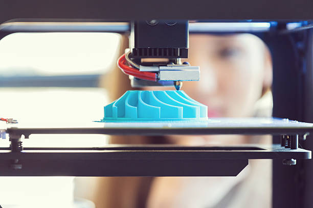
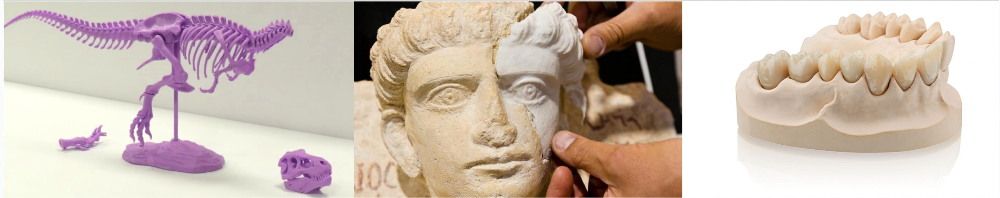

3D PRINTING

WHAT IS 3D PRINTING?
AIt is a process which uses thin layers of plastic to create three dimensional objects.
HOW DOES 3D PRINTING WORK?
3D printing is opposite to the process of subtractive manufacturing. This is where there is an involvement of material removal through methods of turning, miling, drilling, grinding. Instead, in 3D printing thin layers of plastic are fused together, and does not require any mold or material block to create the 3 dimensional object.
HISTORY of 3D PRINTING
First document involving 3D printing traces back to Japan in the 1980s. Hideo Kodama was finding a method to prototype 3D printing in the year 1981. He invented the layer by layer method through using a photsensitive resin that was polymerized by UV light. Unfortunately he was unable to get his invention patented but is recognized as being the first inventor of 3D printing.
A french trio was also trying to prototype a 3D printer, but strived to create system that cured liquid monomers into solids by using a laser instead of using resin. Like Kodama, they were unable to get a patent.
The same year as the french, Charles Hull filed the first patent. Hull was a furniture builder whod decided to create a 3d printer that could print small parts of furniture pieces.
At the same time, in 1998 Carl Deckard from the University of texas filed a patent for a 3D printing system which used laser instead of resin.
USES OF 3D PRINTING
3D printing has been used and continues to be used in a variety of fields. Some of the uses have been discussed below. Paleontologists and students use 3D printing to re-model dinosaur skeletons and other fossils.
 Archeologists use 3D printing to reconstruct destroyed antiques and re-model very fragile artifacts. Physicians along with medical technicians use 3D printers to create hearing aids, prosthetics, artifical teeth and to even model organs and tumours.
SOURCES:
3D printing: What you need to know. PCMAG. (n.d.). https://www.pcmag.com/news/3d-printing-what-you-need-to-know#:~:text=What%20Can%203D%20Printers%20Make,and%20novelty%20items%2C%20and%20toys.
Alexandra. (2022, September 13). When was 3D printing invented? the history of 3D printing -. BCN3D Technologies. https://www.bcn3d.com/the-history-of-3d-printing-when-was-3d-printing-invented/#:~:text=The%20first%20documented%20iterations%20of,was%20polymerized%20by%20UV%20light.
Writer, H. A. T., Ashtari, H., Writer, T., 4, O., Hossein Ashtari Technical Writer opens a new window opens a new window opens a new window opens a new window , Hossein Ashtari Technical Writer opens a new window opens a new window opens a new window, Hossein Ashtari Technical Writer, & opens a new window opens a new window opens a new window Interested in cutting-edge tech from a young age. (n.d.). How a 3D printer works and what it is used for. Spiceworks. https://www.spiceworks.com/tech/devops/articles/what-is-3d-printing/